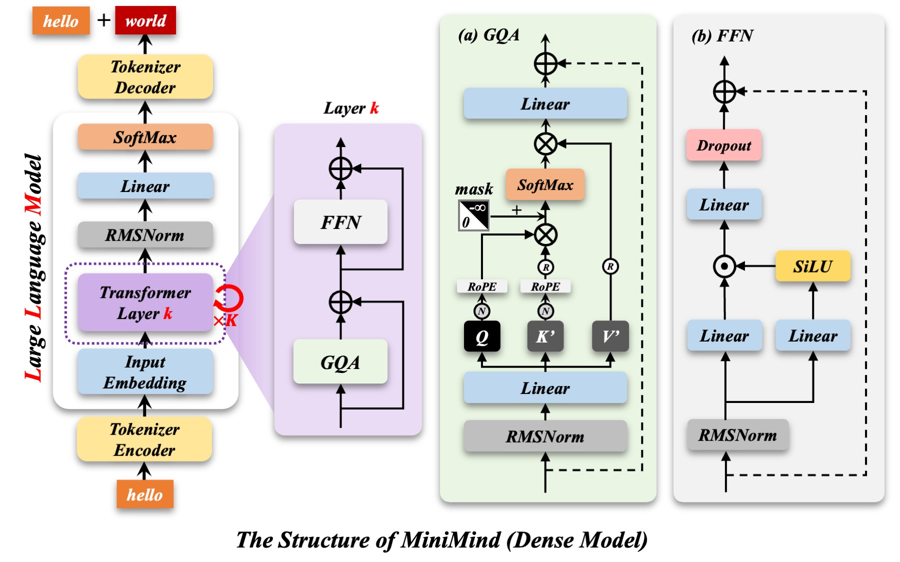
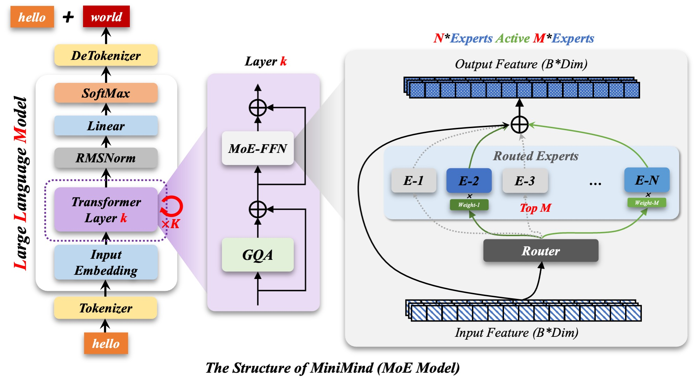

把 MiniMind 拆成 15 个知识点，从零亲手搭一遍
每一个知识点都是一章：先用动画网页讲清原理，再进 Notebook 从最基础的 PyTorch 函数学起， 最后在留白的代码块里自己把模型写出来。模型部分只给文字提示——动手的人是你。
这是一门什么样的课
MiniMind 是一个用极低成本（约 3 元、2 小时）从零训练 64M 参数小语言模型的开源项目。 它的价值在于——代码足够短，短到你能一行一行读懂。本课程把它拆开、摊平，变成一条可以自己走完的学习路径。


📌 本课的学习闭环
动画看懂原理 → Notebook 里先熟悉本章要用的函数 → 读文字提示 → 在空白代码块里自己实现 → 跑通、对照官方实现。
每章的 Notebook 都留了「自测区」，写不出来时再看提示，不要直接抄答案。
课程地图
共 15 章，分三部分：基础 → 模型 → 训练。建议按顺序推进。
三分钟跑起来
# 1. 进入项目目录（已用 uv 管理环境）
cd minimind-from-scratch
# 2. 创建隔离环境并安装依赖（uv 会自动读取 pyproject.toml）
uv sync
# 3. 启动 JupyterLab，打开 notebooks/ 下的任意一章
uv run jupyter lab
# 4. 只想看动画网页？直接用浏览器打开 index.html 即可✅ 关于算力
原理演示全部使用小张量，CPU 就能跑。真正训练 64M 模型建议单卡 3090/4090；
训练章节的 Notebook 以「讲清算法 + 留白实现」为主，跑通与否取决于你的硬件。
目录结构
minimind-from-scratch/
├── index.html # 你正在看的这一页（站点首页）
├── 01_overview.html … 15_agent_rl.html # 15 个原理动画网页
├── assets/ # 共用样式与脚本
├── images/ # MiniMind 官方配图
├── notebooks/ # 15 个引导式 Notebook
│ └── 01_overview.ipynb … 15_agent_rl.ipynb
├── tools/ # 生成与校验脚本
├── pyproject.toml # uv 依赖声明
└── README.md📌 网页与 Notebook 的分工
网页在站点里直接看（这就是它们的用途）；Notebook 需要交互运行，
所以每页右上角的「配套 Notebook」链接会跳到 GitHub 上对应的 .ipynb。